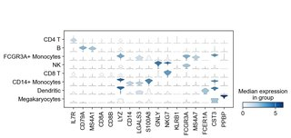
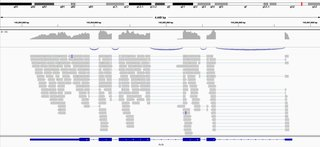
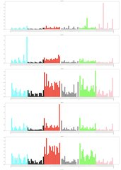
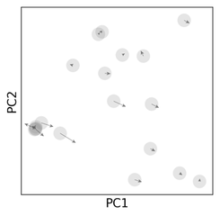
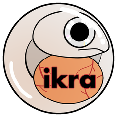
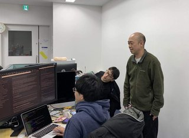
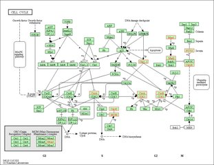

single cell解析における遺伝子発現量の可視化 2024-03-04(Mon) - Posted by 豊田 in 技術ブログ  目的 scanpyでsingle cellの解析を行う際、遺伝子の発現量を見るとき、sc.pl.stacked_violinを用いて、以下の画像のように細胞タイプごとのさまざまな遺伝子の発現量の比較が可能です。 普段、研究室に所属して研究に協力させていただいてるのですが、研究室で「特定.... Read more...
RNA-seq pipeline ikra v2.0 リリース 2021-05-05(Wed) - Posted by 山崎, 北畠, 梅津, 安水 in 技術ブログ  阪大医学部Python会では、RNA-Seqのパイプラインである ikra (https://github.com/yyoshiaki/ikra)をリリースしておりました (cf. 阪医Python会特製 RNA-seq pipeline ver. 1.0 リリース)。このたびikraの機能を大幅.... Read more...
バイオインフォマティクス技術者認定試験2019 解答速報？ 2019-12-11(Wed) - Posted by 小川 in 技術ブログ 先日受験したバイオインフォマティクス認定試験をあらためて復習して、ついでに解答速報（全然速くない）と備忘録程度の解説を書きました。 模範解答 (?) 1 2 3 4 5 6 7 8 9 10 0 4 4 3 3 2 2 4 1 2 2 10 2 1 3 3 4 2 4 3 1 3 20 3 4 2 2 4 1 2 1 4 3 30 1 1 1 2 1 2 3 4 1 4 40 3 4 4 3 2 2 3 1 .... Read more...
がんゲノム変異シグネチャー解析 2019-06-21(Fri) - Posted by 山田 in 技術ブログ  がんゲノムの変異シグネチャーの推定にチャレンジしてみました。 きっかけ 先日の遺伝学の講義にて、がんゲノムの変異シグネチャーを教えていただき、やり方も詳しく書かれていたので、挑戦してみました。 講義ではRでしたので、Pythonでも同じ結果が得られるか、Pythonの勉強も兼ねての挑戦.... Read more...
VELOCYTO 2019-03-24(Sun) - Posted by 廣瀬 in 技術ブログ  Velocyto とは、RNAseq の結果に含まれるイントロンの割合からその細胞の分化指向性を算出するという解析手法です。 RNAseq でイントロン?? RNAseq においては totalRNA のうち 99%ともいわれる rRNA を除き mRNA のみを効率よくSequence する目的で、Pol.... Read more...
阪医Python会特製 RNA-seq pipeline ver. 1.0 リリース 2019-03-19(Tue) - Posted by 菅波, 西田, 大森, 安水, 小川, 山田, 川嶋, 川崎, 平岡, 廣瀬, 柳澤, 淡田, 中村, 依藤 in 技術ブログ  阪医Python会のbioinformaticsチームの一つの成果として、RNA-seqのパイプラインのv1.0がリリースとなったので記事とさせていただきます。SRR idから遺伝子✕サンプルのテーブルにするまでには意外に大変ですが、それをすべて自動化しました。ダウンロード、詳細等.... Read more...
Bioinformatics春合宿@三島 2019-03-10(Sun) - Posted by 安水, 平岡 in 技術ブログ  平岡と安水は2019/03/04-09の一週間、静岡県三島市の国立遺伝学研究所にあるDBCLSにてbioinformatics合宿をしていました。定量、アセンブリを始めとするトランスクリプトーム解析やjuliaの入門、データベースのコツなど、たくさんのことを学びました。bioin.... Read more...
Mockinbirdを用いたPAR-CLIP解析 2019-01-18(Fri) - Posted by 平岡 in 技術ブログ 今回は PAR-CLIP 解析のAll-in-oneパイプラインソフトウェアである、Mockinbirdを紹介します。日本語での情報がほぼなく、説明が長くなってしまいそうなので、２回に分けて書きます。 PAR-CLIPって何？ PAR-CLIPは photoactivatable ribon.... Read more...
Common Workflow Language入門 2018-12-07(Fri) - Posted by 安水 in 技術ブログ 先日workflow-meetupにお誘いを頂いて参加してきました。そこでThe Common Workflow Language(CWL)というものを習ったので忘れないうちに医学部生にもわかりやすくまとめます。 CWLって？ 一言で言うと、bioinformatics処理の自動化です。ど.... Read more...
Gene Set Enrichment Analysis (GSEA)入門 2018-11-27(Tue) - Posted by 西田 in 技術ブログ  GSEAとは GSEAは発現差異解析の結果などで得られる遺伝子群がどういった機能のものかを明らかにするために用いられる解析手法です。機能表現として用いられる主なものとしてはKEGGのパスウェイ分類やGene Ontology(GO)があります。 clusterProfilerでGSEA.... Read more...